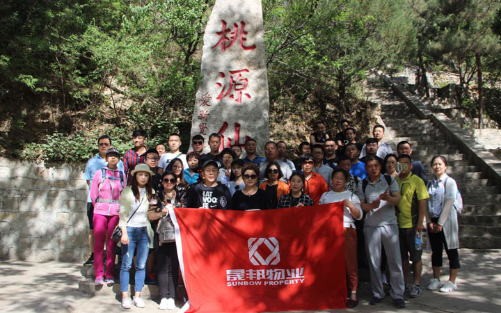

当前位置：关于晟邦
当前位置：关于晟邦
公司简介
北京晟邦物业管理有限公司成立于2008年5月13日，是国家一级资质的物业管理公司，是物业服务百强企业。2012年1月正式通过国家质量ISO9001:2008、环境ISO14001:2004、职业健康安全GB/T28001-2001管理体系认证。
公司在管面积达300万余平米，管辖项目：林肯公园、林肯公寓、星悦国际、君安国际、珺悦国际、鹭峯/鹭廷、尚峯壹號、润景园/锦绣园、北京庄园、林肯会、尚峯会等，服务产品覆盖公寓、商业、住宅、会所等多种业态。林肯公园项目于2012年9月被评为北京市物业管理示范小区（五星级），2013年9月被评为全国物业管理示范住宅小区。
北京晟邦物业管理有限公司聚合了一批有着丰富管理经验的精英团队，始终将“品质生活 悉心为你”作为服务理念，“创造最具价值的生活空间”为我们的愿景，力争通过不断的学习和创新，为客户提供符合行业发展趋势的专业化服务。
北京晟邦物业管理有限公司始终以文化凝聚人，以文化感染人，以文化推动员工和企业的共同进步。公司秉承“务实、高效、责任、和谐”的核心价值观，通过专业化、制度化、标准化、程序化的服务体系，致力于打造高品质、受尊重的优秀企业，为广大业主提供尊贵、贴心、高效、舒适的生活环境。
公司在管面积达300万余平米，管辖项目：林肯公园、林肯公寓、星悦国际、君安国际、珺悦国际、鹭峯/鹭廷、尚峯壹號、润景园/锦绣园、北京庄园、林肯会、尚峯会等，服务产品覆盖公寓、商业、住宅、会所等多种业态。林肯公园项目于2012年9月被评为北京市物业管理示范小区（五星级），2013年9月被评为全国物业管理示范住宅小区。
北京晟邦物业管理有限公司聚合了一批有着丰富管理经验的精英团队，始终将“品质生活 悉心为你”作为服务理念，“创造最具价值的生活空间”为我们的愿景，力争通过不断的学习和创新，为客户提供符合行业发展趋势的专业化服务。
北京晟邦物业管理有限公司始终以文化凝聚人，以文化感染人，以文化推动员工和企业的共同进步。公司秉承“务实、高效、责任、和谐”的核心价值观，通过专业化、制度化、标准化、程序化的服务体系，致力于打造高品质、受尊重的优秀企业，为广大业主提供尊贵、贴心、高效、舒适的生活环境。
北京晟邦物业管理有限公司
成立于：2008年5月13日
企业文化
企业精神
育：慧眼识才，悉心育才，以人为本，共同发展，创建学习型组织；
驭：团队协作，顺畅沟通，合作共赢，追求效率；
预：国际化视野，前瞻性思维，业主/客户导向，创新求变；
予：与业主/客户相伴成长，给业主/客户足够的关注，懂得给予，懂得感恩；
玉：把握市场，专注专业，稳中求变，品质制胜；
誉：诚信经营，胸怀责任，关注细节，追求业主/客户美誉度。
企业理念 质量观：持续的优秀品质是晟邦的核心竞争力；
创新观：创新驱动晟邦健康发展；
服务观：服务始于心，见于细节；
人才观：人才是晟邦成功的源动力；
团队观：尊重成员，打造强凝聚力团队；
学习观：学以致用，整体增值，创建学习型组织。
驭：团队协作，顺畅沟通，合作共赢，追求效率；
预：国际化视野，前瞻性思维，业主/客户导向，创新求变；
予：与业主/客户相伴成长，给业主/客户足够的关注，懂得给予，懂得感恩；
玉：把握市场，专注专业，稳中求变，品质制胜；
誉：诚信经营，胸怀责任，关注细节，追求业主/客户美誉度。
企业理念 质量观：持续的优秀品质是晟邦的核心竞争力；
创新观：创新驱动晟邦健康发展；
服务观：服务始于心，见于细节；
人才观：人才是晟邦成功的源动力；
团队观：尊重成员，打造强凝聚力团队；
学习观：学以致用，整体增值，创建学习型组织。
北京晟邦物业管理有限公司
企业文化
总经理致辞
晟邦物业公司自成立以来一直秉承“服务业主，客户至上”的服务精神，致力于“品质生活、悉心为你”的服务理念，在管理实践中通过管理策划、年度计划、全面预算管理、绩效目标责任书等现代管理手段，对公司管理的各个环节进行全面准确的部署、监控和评估；通过财务管理系统、客户关系管理系统、设备设施管理系统、办公自动化系统、人力资源管理系统等现代化管理技术，实现管理的标准化、规范化、信息化，从而极大限度提高了管理效率，降低了管理成本，提高了服务质量。多年来，在晟邦人的不懈努力下，我们经历了跨越式发展，创建了一套科学规范的管理制度和人才竞争上岗激励机制，荣获了“北京市五星级物业服务示范项目”称号，塑造了良好的物业服务口碑。
衷心感谢长期以来给予晟邦物业大力支持和关心的朋友们，我们坚信有您一如继往的关心、理解与支持，我们将成为物业管理行业优秀服务企业。我们将继续发扬品质、责任、高效、创新的核心价值，坚持“品质生活，悉心为你”的服务理念，努力为客户提供全方位的优质服务，竭诚为您创造物业服务价值，并与您一道携手共建美好和谐的生活（工作）空间。
衷心感谢长期以来给予晟邦物业大力支持和关心的朋友们，我们坚信有您一如继往的关心、理解与支持，我们将成为物业管理行业优秀服务企业。我们将继续发扬品质、责任、高效、创新的核心价值，坚持“品质生活，悉心为你”的服务理念，努力为客户提供全方位的优质服务，竭诚为您创造物业服务价值，并与您一道携手共建美好和谐的生活（工作）空间。

北京晟邦物业管理有限公司
总经理：武育